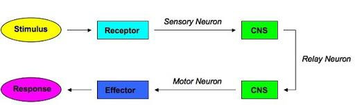
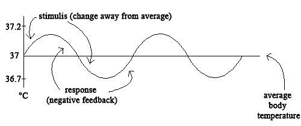
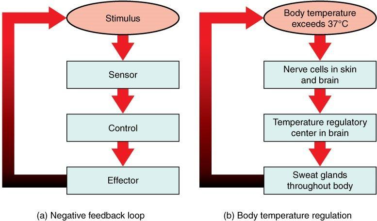
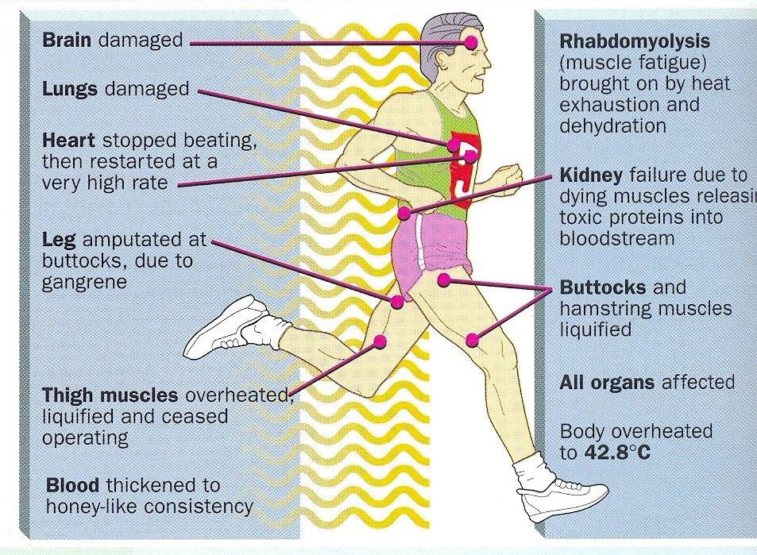
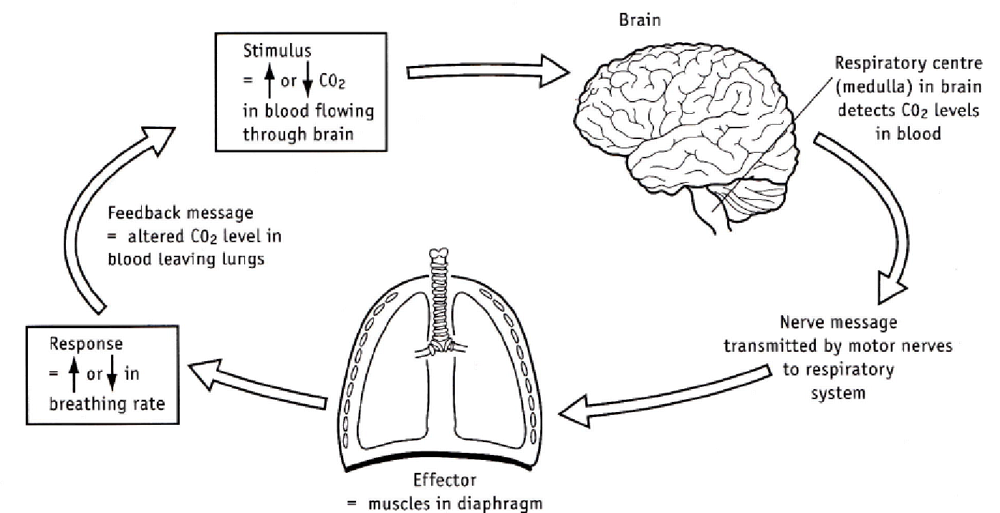
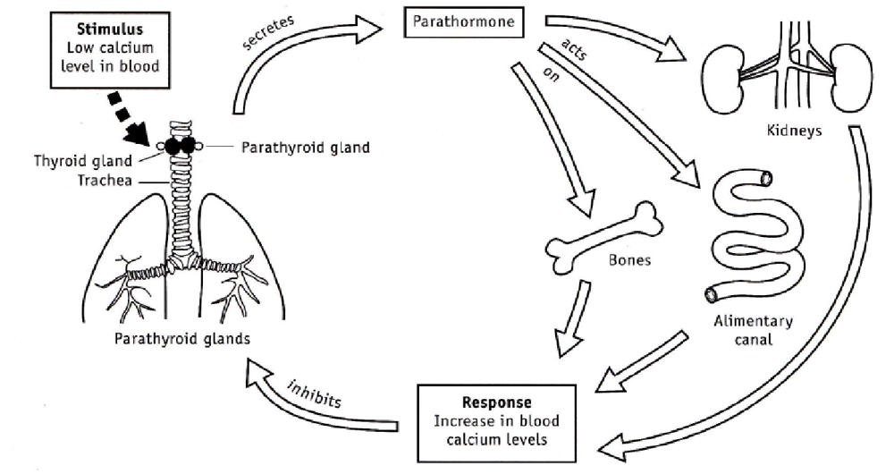
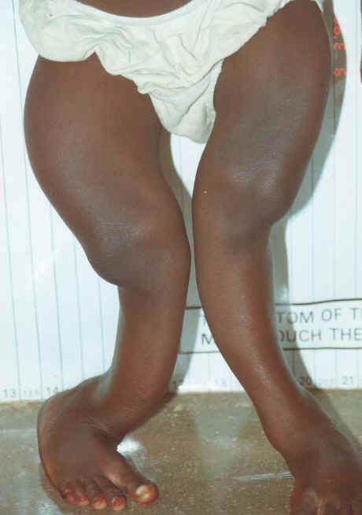

5.1 What is Homeostasis?
(homeo = same; stasis = not moving)
Conditions that must be controlled include:
- body temperature
- water content
- carbon dioxide level
- blood sugar (glucose) level
- (and others)
The body maintains homeostasis by monitoring its internal conditions and responding when they move too far from normal. Two systems maintain homeostasis:
- The nervous system detects changes and responds quickly, but its responses are usually short-lived.
- The hormonal (endocrine) system produces longer-term changes, but takes longer to act.
Together they keep the body's internal environment within set limits.
The Stimulus-Response Model
All homeostatic mechanisms use a basic model to detect and respond to changing conditions, called the Stimulus-Response Model. It uses the nervous and endocrine systems working together.

- Stimulus: a change in the environment (internal or external)
- Receptor: specialised cells that detect the change
- Control centre: sends a nervous or hormonal message (or both)
- Effector: the part of the body that responds
- Response: the action taken

Case study: body temperature regulation
Keeping a steady body temperature in warm-blooded animals is an example of homeostasis. In humans, it involves sweating when the internal temperature gets too high, and shivering and generating heat through metabolism when it falls too low.

Put the parts of the model in order.
Stimulus → → → CNS → → → response
5.2 When Homeostasis Fails
In 1988, Mark Dorrity entered an 8 km fun run in Wagga Wagga, NSW. The organisers cancelled the run because the temperature was expected to reach 42°C, but Mark decided to run anyway. This turned out to be a serious error of judgement. During the run he collapsed with heat exhaustion and dehydration, and his body temperature soared to a dangerous 42.8°C.
Normal body temperature is 37°C. When the body gets too hot, blood proteins become denatured and the blood coagulates (like boiled milk curdling). The blood can then no longer pass through the capillaries, so it can't deliver nutrients to cells or remove wastes. All parts of the body can be affected.
Mark might have suffered less damage if he had drunk frequently during the run, but he became dehydrated and didn't replace lost fluid, so his blood became viscous (thick and sticky). This reduced blood flow even more. Mark's heart stopped, and he also suffered some brain damage.
The overheating of Mark's muscle cells also caused a rare condition called rhabdomyolysis, in which fatigued, dehydrated muscle cells literally liquefy and die. The dead muscle tissue in his left leg became gangrenous and was amputated. The dying muscle cells released toxic chemicals into his bloodstream, causing kidney failure. Mark was in a coma for three months.

State whether each example shows negative or positive feedback.
- If blood temperature rises too high, the hypothalamus senses the change and sends signals to the blood vessels of the skin. These dilate, more blood flows near the surface, and excess heat leaves the body.
- If blood temperature falls too low, the hypothalamus sends signals that constrict the blood vessels supplying the skin. Warm blood stays deeper in the body and less heat is lost.
- During childbirth, stretching of the uterus triggers the release of the hormone oxytocin, which makes the contractions stronger. This speeds up labour.
- High blood pressure stretches receptors in the blood vessel walls, which signal the brain to slow the heart rate. As pressure drops, the receptors relax and a signal speeds the heart rate up again.
Negative feedback reverses a change, bringing conditions back to normal. Positive feedback increases the change. In childbirth, stronger contractions cause more stretching, which releases more oxytocin.
2. Feedback graphs
Draw graphs of these data to decide whether each shows positive or negative feedback.
a. A patient's body temperature over 24 hours. Normal human body temperature varies from 36.5–37.2°C.
| Time | 12 am | 3 am | 6 am | 9 am | 12 pm | 3 pm | 6 pm | 9 pm |
|---|---|---|---|---|---|---|---|---|
| Temp (°C) | 36.80 | 36.70 | 37.00 | 37.20 | 37.10 | 36.90 | 37.00 | 37.10 |
b. A woman being tested for diabetes. The normal range for blood glucose is 70–110 mg/dL.
| Time | 0 | 1 hour | 2 hours | 3 hours | 4 hours | 5 hours |
|---|---|---|---|---|---|---|
| Blood glucose | 100 | 120 | 110 | 90 | 80 | 85 |
- Body temperature:
- Blood glucose:
In both cases the values move away from normal and are then brought back to stay within (or return to) the normal range, which is negative feedback.
Complete the receptor, control centre (and message), effector and response for:
- Stimulus: bright light
- Stimulus: blood temperature cools (cold day)
a. Receptor: photoreceptor cells in the retina of the eye. Control centre: the brain, which sends a nervous message along motor neurons. Effector: the muscles of the iris. Response: the pupil constricts, letting less light in.
b. Receptor: thermoreceptors (in the hypothalamus and skin). Control centre: the hypothalamus in the brain, which sends nervous messages. Effector: skeletal muscles (and blood vessels in the skin). Response: shivering generates heat (and skin blood vessels constrict), so body temperature rises back to normal.
5.3 Other Examples of Homeostasis
Control of breathing rate
When carbon dioxide levels in the blood rise (for example during exercise), the respiratory centre in the medulla of the brain detects the change. It sends nerve messages to the breathing muscles (diaphragm and intercostal muscles), which increase the breathing rate. Breathing out more CO2 brings levels back to normal: negative feedback.

Control of calcium levels in the blood
A constant level of calcium must be maintained in the blood. Calcium is needed for proper nerve, muscle and cell membrane function, for blood clotting, and for forming teeth and bones.
- Too much calcium can lead to nephrocalcinosis (calcium deposits in the kidneys).
- Too little calcium can cause bone deformities in children, called rickets.
When blood calcium is low, the parathyroid glands release parathyroid hormone, which raises blood calcium (from bones, kidneys and intestine). The thyroid gland helps lower calcium when it is too high.

